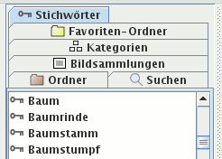

Im Kartenreiter Stichwörter werden alle Stichwörter angezeigt, die Sie Ihren Bildern zuordneten. Klicken Sie auf ein Stichwort, werden alle Bilder mit diesem Stichwort angezeigt.
Wählen Sie mehr als ein Stichwort aus, werden Bilder angezeigt, die alle ausgewählten Stichwörter enthalten. So finden Sie Bilder auf denen ein Baum zu sehen ist und gleichzeitig der Himmel oder auf dem Ihr Freund Peter zu sehen ist zusammen mit Ihrer Freundin Sabine.

Es gibt kein Kontextmenü für diesen Kartenreiter.